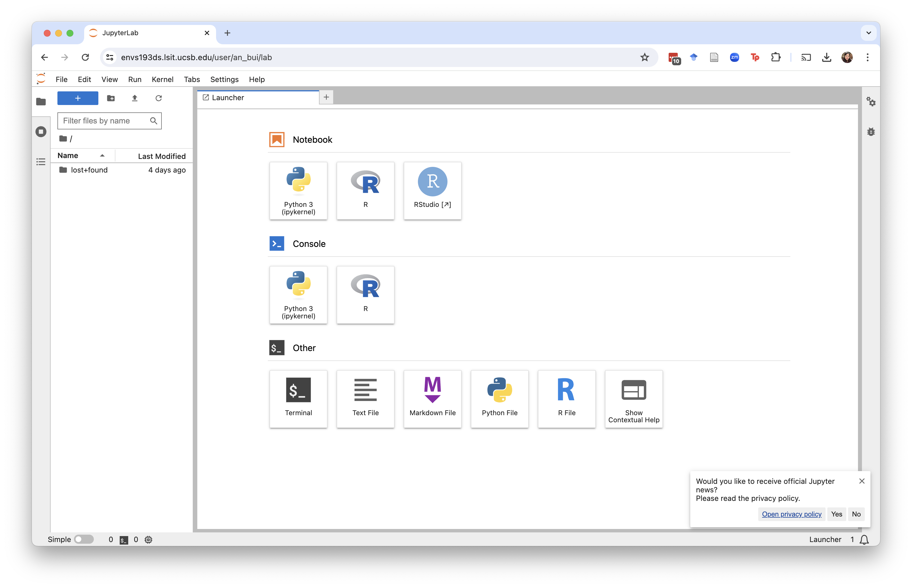
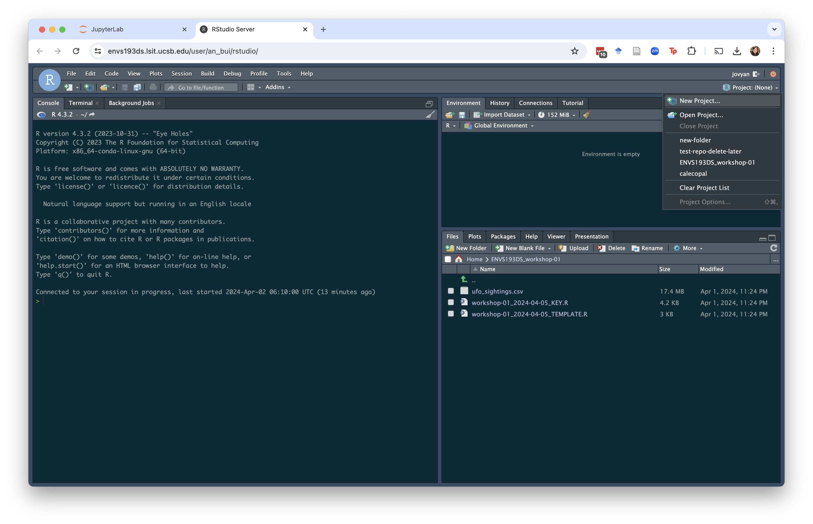

1. What is the virtual machine?
For this class, we have a virtual machine: it allows you to run R and RStudio in a browser (e.g. Google Chrome, Safari, Firefox). Find the virtual machine here!
The benefits of using the virtual machine are plenty:
- you don’t have to download R, RStudio, and Quarto
- the versions of all the software you need are updated
- the packages you need for the class are already installed
- you can download everything you’ve worked on
and more!
The one con is that you do need to be connected to the internet. But compared to the benefits, this is hopefully not a major hurdle.
Basically, if you’re having any issues with your versions of R, RStudio, or Quarto, try running your code on the virtual machine.
2. Logging in and opening things up
Once you open up the virtual machine, you’ll be asked to log in. Use your UCSB email to do that. You should then get a screen that looks like this:
 Click RStudio.
You should then see a screen that looks exactly like an RStudio screen!
{kind=link}
3. Setting up
If you’re opening this up for the first time, do task 3 in the Getting set up guide: Change your workspace save settings.
4. Getting files into the machine
Download the zipped file of workshop materials from Canvas. Hit the Upload button (yellow arrow pointing up against a white paper). You should see a window that looks like this:
{kind=link}
Hit Choose file and select the .zip file.
The machine will automatically unzip the file and create a new folder with all the file contents.
{kind=link}
5. Creating a project
We’re going to create a lot of Rprojects in this class to get used to it. You can create a project in an existing directory (aka folder) in the same way that you would in the desktop version of RStudio. Go to the button in the top left that says Project: (None) and click. Hit New Project.
 Then, select the “Existing Directory” option.
{kind=link}
You should now see the new Rproject in two locations: 1) in the upper left and 2) in the list of files in your directory.
{kind=link}
6. Downloading your files
If you want to hold onto your files on your computer, you can download a whole directory. Click on the folder you want to download and go to More > Export in the lower right pane.
{kind=link}
The machine will download the whole folder as a .zip file, which you can then unzip on your computer.